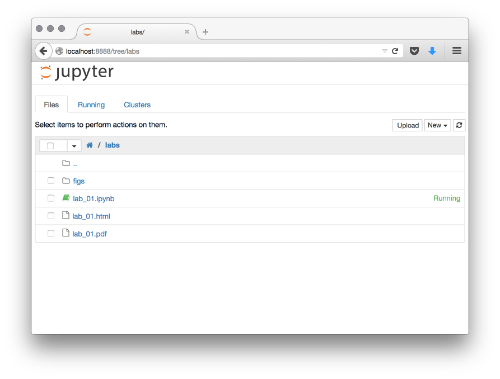

In this first tutorial we will introduce the main tools we will be working with throughout the rest of the course. Although very basic and seemingly abstract, everything showed here will become the basis on top of which we will build more sophisticated (and fun) tasks. But, before, let us get to know the tools that will give us data super-powers.
Open Source¶
This course will introduce you to a series of computational tools that make the life of the Data Scientist possible, and much easier. All of them are open-source, which means the creators of these pieces of software have made available the source code for people to use it, study it, modify it, and re-distribute it. This has allowed a large eco-system that today represents the best option for scientific computing, and is used widely both in industry and academia. Thanks to this, this course can be taught with entirely freely available tools that you can install in any of your computers.
If you want to learn more about open-source and free software, here are a few links:
- [Video]: brief explanation of open source.
- [Book] The Cathedral and the Bazaar: classic book, freely available, that documents the benefits and history of open-source software.
Jupyter Notebook¶
The main computational tool you will be using during this course is the Jupyter notebook. Notebooks are a convenient way to thread text, code and the output it produces in a simple file that you can then share, edit and modify. You can think of notebooks as the Word document of Data Scientists, just better.
Start a notebook¶
In order to begin a notebook session, you need to do it from what is called the command line, a terminal window that allows you to interact with your computer through written commands. This is how you can fire up a terminal:
- If you are on a Windows computer, you can start PowerShell from the Start menu (
cmd prompt). - On a Mac, fire up the Terminal.app utility.
- In Linux, use any of the terminals available.
Then type the following command
> source activate gdsNOTE: ignore source if you are on Windows and simply type activate gds.
Then launch Jupyter by typing on the same terminal:
> jupyter notebookThis should bring up a browser window with a home page that looks more or less like this (although with a different list of files probably):

Navigate until the folder where you have placed the lab_01.ipynb file for this tutorial and click on it. This will open the notebook on a different tab. You are now on the interactive version of the notebook!
When you are finished with the session, you can save the notebook with File -> Save and Checkpoint. Everything you do on the notebook (text, code and output) is saved into an .ipynb file that you can open later, share, etc.
Cells¶
The main building block of notebooks are cells. These are chunks of the same time of content which can be cut, pasted, and moved around in a notebook. Cells can be of two types:
- Text, like the one where this is written.
- Code, like the following one below:
# This is a code cell
</div> </div> </div>
</div>
You can create a new cell by clicking Insert -> Cell Above/Below in the top menu. By default, this will be a code cell, but you can change that on the Cell -> Cell Type menu. Choose Markdown for a text cell. Once a new cell is created, you can edit it by clicking on it, which will create the cursor bar inside for you to start typing.
Pro tip!: cells can also be created with shortcuts. If you press <escape> and then b (a), a new cell will be created below (above). There is a whole bunch of shortcuts you can explore by pressing <escape> and h (press <escape> again to leave the help).
Code and its output¶
A particularly useful feature of notebooks is that you can save, in the same place, the code you use to generate any output (tables, figures, etc.). As an example, the cell below contains a snipet of Python that returns a printed statement. This statement is then printed below and recorded in the notebook as output:
print("Hello world!!!")
</div> </div> </div>
</div> </div>
</div>
Note also how the notebook has automatic syntax highlighting support for Python. This makes the code much more readable and understandable. More on Python below.
Markdown¶
Text cells in a notebook use the Github Flavored Markdown markup language. This means you can write plain text with some rules and the notebook renders a more visually appealing version of it. Let's see some examples:
- BOLD:
This is **bold**.
Is rendered:
This is bold.
- ITALIC:
This is *italic*.
Is rendered:
This is italic.
- LISTS:
You can create unnumbered lists:
* Item 1
* Item 2
* ...Which will produce:
- Item 1
- Item 2
- ...
Or you can create numbered lists:
1. First element
1. Second element
1. ...And get:
- First element
- Second element
- ...
Note that you don't have to write the actual number of the element, just using 1. always produces a numbered list.
You can also nest lists:
* First unnumbered element, which can be split into:
1. One numbered element
2. Another numbered element
* Second element.
* ...First unnumbered element, which can be split into:
- One numbered element
- Another numbered element
Second element.
- ...
This creates many oportunities to combine things nicely.
- LINKS
You can easily create hyperlinks, for example to [WikiPedia](https://www.wikipedia.org/).
You can easily create hyperlinks, for example to WikiPedia.
- HEADINGS: including
#before a line causes it to render a heading.
# This is Header 1
Turns into:
This is Header 1¶
## This is Header 2
Turns into:
This is Header 2¶
### This is Header 3
Turns into:
This is Header 3¶
And so on...
You can see a more in detail introduction in the following links:
Rich content in a notebook¶
Notebooks can also include rich content from the web. For that, we need to import the display module:
import IPython.display as display
</div> </div> </div>
</div>
This makes available additional functionality that allows us to embed rich content. For example, we can include a YouTube clip easily by passing it's ID:
display.YouTubeVideo('iinQDhsdE9s')
</div> </div> </div>
</div>
</div> </div>
</div>
Or we can pass standard HTML code:
display.HTML("""<table>
<tr>
<th>Header 1</th>
<th>Header 2</th>
</tr>
<tr>
<td>row 1, cell 1</td>
<td>row 1, cell 2</td>
</tr>
<tr>
<td>row 2, cell 1</td>
<td>row 2, cell 2</td>
</tr>
</table>""")
</div> </div> </div>
</div>
</div> </div>
</div>
Note that this opens the door for including a large number of elements from the web, as an iframe is also allowed. For example, interactive maps can be included:
osm = """
<iframe width="425" height="350" frameborder="0" scrolling="no" marginheight="0" marginwidth="0" src="http://www.openstreetmap.org/export/embed.html?bbox=-2.9662737250328064%2C53.400500637844594%2C-2.964626848697662%2C53.402550738394034&layer=mapnik" style="border: 1px solid black"></iframe><br/><small><a href="http://www.openstreetmap.org/#map=19/53.40153/-2.96545">View Larger Map</a></small>
"""
display.HTML(osm)
</div> </div> </div>
</div>
</div> </div>
</div>
Or sound content:
sound = '''
<iframe width="100%" height="450" scrolling="no" frameborder="no" src="https://w.soundcloud.com/player/?url=https%3A//api.soundcloud.com/tracks/178720725&auto_play=false&hide_related=false&show_comments=true&show_user=true&show_reposts=false&visual=true"></iframe>
'''
display.HTML(sound)
</div> </div> </div>
</div>
</div> </div>
</div>
A more thorough exploration of them is available in this notebook.
Exercise to work on your own¶
Try to reproduce, using markdown and the different tools the notebook affords you, the following WikiPedia entry:
https://en.wikipedia.org/wiki/Chocolate_chip_cookie_dough_ice_cream
display.IFrame('https://en.wikipedia.org/wiki/Chocolate_chip_cookie_dough_ice_cream',
700, 500)
</div> </div> </div>
</div>
</div> </div>
</div>
Pay special attention in getting the bold, italics, links, headlines and lists correctly formated. Bonus if you manage to insert the image as well!
Python¶
Although we will have a look at other programs, the main bulk of the course relies on the Python programming language. Python is a high-level programming language widely used today. To give a couple of examples of its relevance, it is underlying most of the Dropbox systems, but also heavily used to control satellites at NASA. A great deal of Science is also done in Python, from research in astronomy at UC Berkley, to courses in economics by Nobel Prize Professors.
This course uses Python because it has emerged as one of the main and most solid options for Data Science, together with other free alternatives such as R. Python is widely used for data processing and analysis both in academia and in industry. There is a vibrant and growing scientific community (example and example), working at both universities and companies, that supports and enhances its capabilities for data analysis by providing new and refining existing extensions (a.ka.a. libraries, see below). In the geospatial world, Python is also very widely adopted, being the selected language for scripting in both ArcGIS and QGIS. All of this means that, whether you are thinking of continuing in Higher Education or trying to find a job in industry, Python will be an importan asset that employers will significantly value.
Being a high-level language means that the code can be "dynamically interpreted", which means it is run on-the-fly without the need to be compiled. This is in contrast to "low-level" programming languages, which first need to be converted into machine code (i.e. compiled) before they can be run. With Python, one does not need to worry about compilation and can just write code, evaluate, fix it, re-evaluate it, etc. in a quick cycle, making it a very productive tool. The rest of this tutorial covers some of the basic elements of the language, from conventions like how to comment your code, to the basic data structures available.
The rest of the tutorial is partly inspired by the introductory lesson in this course by Lorena Barba's group.
Python libraries¶
The standard Python language includes some data structures (e.g. lists, dictionaries, etc. See below) and allows many basic operations (e.g. sum, product, etc.). For example, right out of the box, and without any further action needed, you can use Python as a calculator:
3 + 5
</div> </div> </div>
</div>
</div> </div>
</div>
2. / 3
</div> </div> </div>
</div>
</div> </div>
</div>
(3 + 5) * 2. / 3
</div> </div> </div>
</div>
</div> </div>
</div>
However, the strength of Python as a data analysis tool comes from the extensions provided separately that add functionality and provide access to much more sophisticated data structures and functions. These come in the form of packages, or libraries, that once installed need to be imported into a session.
In this course, we will be using many of the core libraries of what has been called the "PyData stack", the set of libraries that make Python a full-fledge system for Data Science. We will introduce them gradually as we need them for particular tasks but, for now, let us have a look at the foundational library, numpy (short for numerical Python). Importing it is simple:
import numpy as np # we rename it in the session as `np` by convention
</div> </div> </div>
</div>
Note how we import it and rename it in the session, from numpy to np, which is shorter and more convenient.
Note also how comments work in Python: everything in a line after the # sign is ignored by Python when it evaluates the code. This allows you to insert comments that Python will ignore but that can help you and others better understand the code.
Once imports are out of the way, let us start exploring what we can do with numpy. One of the easiest tasks is to create a sequence of numbers:
seq = np.arange(10)
seq
</div> </div> </div>
</div>
</div> </div>
</div>
The first thing to note is that, in line 1, we create the sequence by calling the function arange and assign it to an object called seq (it could have been called anything else, pick your favorite) and, in line 2, we have it printed as the output of the cell.
Another interesting feature is how, since we are calling a numpy function called arange by adding np. in front. This is to note that the function comes explicitly from numpy. To find out how necessary this is, you can try generating the sequence without np:
seq = arange(10)
seq
</div> </div> </div>
</div> </div>
</div>
What you get instead is an error, also called a "traceback". In particular, Python is telling that it cannot find a function named arange in the core library. This is because that particular function is only available in numpy.
Variables¶
A basic feature of Python is the ability to assign a name to different "things", or objects. These can also be called sometimes "variables". We have already seen that in the example above but, to make it more explicit, let us make it even simpler. For example, an object can be a single number:
a = 3
</div> </div> </div>
</div>
Or a name, also called "string":
b = 'Hello World'
</div> </div> </div>
</div>
You can check what type an object is also easily:
type(a)
</div> </div> </div>
</div>
</div> </div>
</div>
int is short for "integer" which, roughly speaking, means an whole number. If you want to save a number with decimals, you will be using floats:
c = 1.5
type(c)
</div> </div> </div>
</div>
</div> </div>
</div>
As mentioned, what we understand as letters in a wide sense (spaces and other signs count too) is called "strings" (str in short):
type(b)
</div> </div> </div>
</div>
</div> </div>
</div>
Help¶
A very handy feature of Python is the ability to access on-the-spot help for its different functions. This means that you can check what a function is supposed to do, or how to access it, right inside your Python session. Of course, this also works handsomely inside a notebook. There are a couple of ways to access the help.
Take the numpy function arange that we have used above. The easiest way to check interactively how to use it is by:
np.arange?
</div> </div> </div>
</div>
As you can see, this brings up a sub-window in the browser with all the information you need.
If, for whatever reason, you needed to print that info into the notebook itself, you can do the following:
help(np.arange)
</div> </div> </div>
</div> </div>
</div>
Control flow (a.k.a. for loops and if statements)¶
Although this does not intend to be a comprehensive introduction to computer programming or general purpose Python (check the references for that, in particular Allen Downey's book), it is important to be aware of two building blocks of almost any computer program: for loops and if statements. It is possible that you will never require them for this course, as all that is used here is based on existing methods and functions, but it is always useful to know they exist and to be able to recognize them. They can also come in very handy in cases where you some extra functionality out of standard methods. Without further ado, let us have a look and the two single most relevant tools of computer programming.
forloops
These allow you to repeat a particular action or task over a sequence. As an example, you can print your name ten times without having to type it yourself every single time:
for i in np.arange(10):
print 'my name'
</div> </div> </div>
</div> </div>
</div>
Note a couple of features in the loop:
- You loop over a sequence, in this particular case the sequence of ten numbers created by
np.arange(10). - In every step, for every element of the sequence in this case, you repeat an action. Here we are printing the same text,
my name. - Although not used in this simple loop, each of the elements you loop over can be accessed inside the loop. This can be irrelevant, as in the loop above, or extremely useful, it depends on the context. For example, see a case where you use the value of the sequence in each step:
for i in np.arange(10):
print "I am at step ", i
</div> </div> </div>
</div> </div>
</div>
One more note: for convention, we are calling the element of the sequence i, but this could be named anything. In fact, in many cases, more meaningful names make code much more readable. For example, you could think of a re-write of the loop above as:
for step in np.arange(10):
print "I am at step ", step
</div> </div> </div>
</div> </div>
</div>
ifstatements
We have just seen how for loops allow you to repeat an action over a sequence. In the case of if statements, these allow you to select or restrict such actions to only those cases that meet a condition(s) you specify in the statement.
For example, if you think of the loops written above, you might want to only print those that are odd, skipping those that are even:
for i in np.arange(10):
if i%2:
print i
</div> </div> </div>
</div> </div>
</div>
Ignore for the moment the part i%2, just remember this is one way Python has to check if a number is odd. The important bit in this loop, as compared to the simpler one above, is that we are using an if statement to select only those candidates that meet the condition. In other words, what we are doing it looping over every number in the sequence from zero to nine (for i in np.arange(10)) and checking if they are even or odd (if i%2). If they meet the condition, they are odd, then we proceed and print them on the screen.
A full if statement also allows for an action to be taken if the original condition is not satisfied. This is called an "ifelse" statement. For example, you can think of a loop that prints the type of each number in a sequence:
for i in np.arange(10):
# Check if it is odd
if i%2:
print i, ' is odd'
# If not odd (even), then do the following
else:
print i, ' is even'
</div> </div> </div>
</div> </div>
</div>
Data structures¶
The standard python you can access without importing any additional libraries contains a few core data structures that is very handy to know. Most of data analysis is done on top of other structures specifically designed for the purpose (numpy arrays and pandas dataframes, mostly. See the following sessions for more details), but some understanding of these core Python structures is very useful. In this context, we will look at three: values, lists, and dictionaries.
- Values: these are the most basic elements to organize data and information in Python. You can think of them as numbers (integers or floats) or words (strings). Typically, these are the elements that will be stored in lists and dictionaries.
An integer is a whole number:
i = 5
type(i)
</div> </div> </div>
</div>
</div> </div>
</div>
A float is a number that allows for decimals:
f = 5.2
type(f)
</div> </div> </div>
</div>
</div> </div>
</div>
Note that a float can also not have decimals and still be stored as such:
fw = 5.
type(fw)
</div> </div> </div>
</div>
</div> </div>
</div>
However, they are different representations:
f == fw
</div> </div> </div>
</div>
</div> </div>
</div>
- Lists: a list is an ordered sequence of values that can be of mixed types. They are represented between squared brackets (
[]) and, although not very efficient in memory terms, are very flexible and useful to "put things together".
For example, the following list of integers:
l = [1, 2, 3, 4, 5]
l
</div> </div> </div>
</div>
</div> </div>
</div>
type(l)
</div> </div> </div>
</div>
</div> </div>
</div>
Or the following mixed one:
m = ['a', 'b', 5, 'c', 6, 7]
m
</div> </div> </div>
</div>
</div> </div>
</div>
Lists can be queried and sliced. For example, the first element can be retrieved by:
l[0]
</div> </div> </div>
</div>
</div> </div>
</div>
Or the second to the fourth:
m[1:4]
</div> </div> </div>
</div>
</div> </div>
</div>
Lists can be added:
l + m
</div> </div> </div>
</div>
</div> </div>
</div>
New elements added:
l.append(4)
l
</div> </div> </div>
</div>
</div> </div>
</div>
Or modified:
l[1]
</div> </div> </div>
</div>
</div> </div>
</div>
l[1] = 'two'
l[1]
</div> </div> </div>